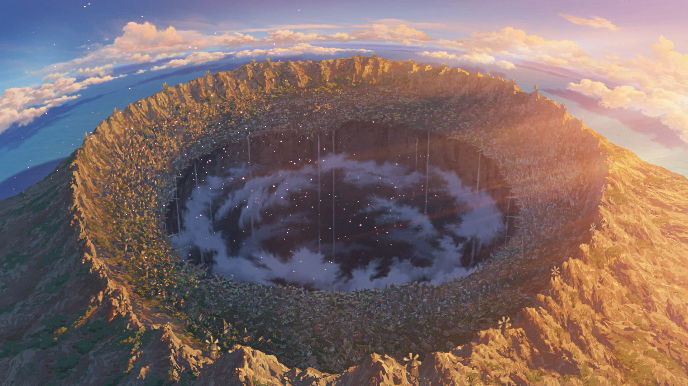
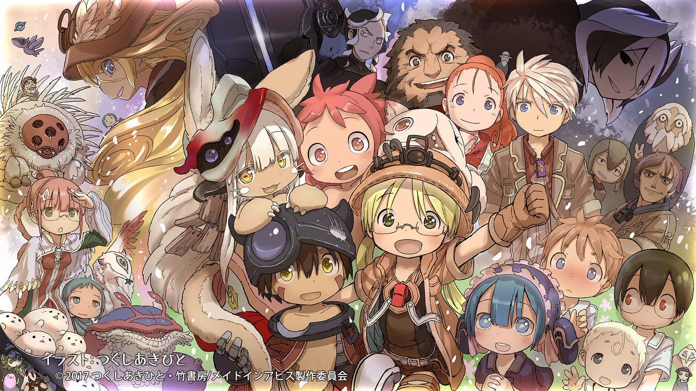
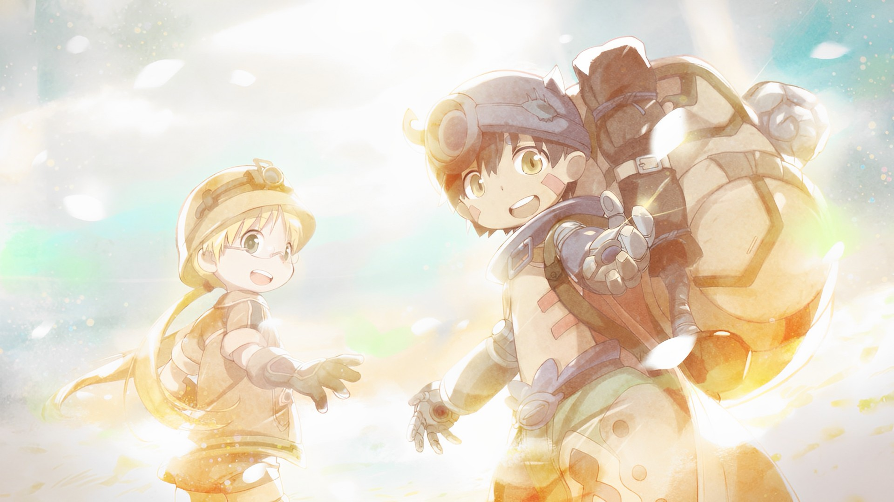

In a world that has been thoroughly explored,
The only remaining uncharted territory is the huge hole known as "Abyss."
A place where strange and mysterious creatures live, valuable relics lie hidden here.
The mysterious appearance of the "Abyss",
it fascinated people and inspired them to embark on adventures.
In the city of Orth, built on the edge of the Abyss,
Riko, an orphan hopes to become a great cave explorer like her mother
and solve the mysteries of the Abyss.
Then one day, while exploring the Abyss, Riko picks up a robot in the shape of a boy...


